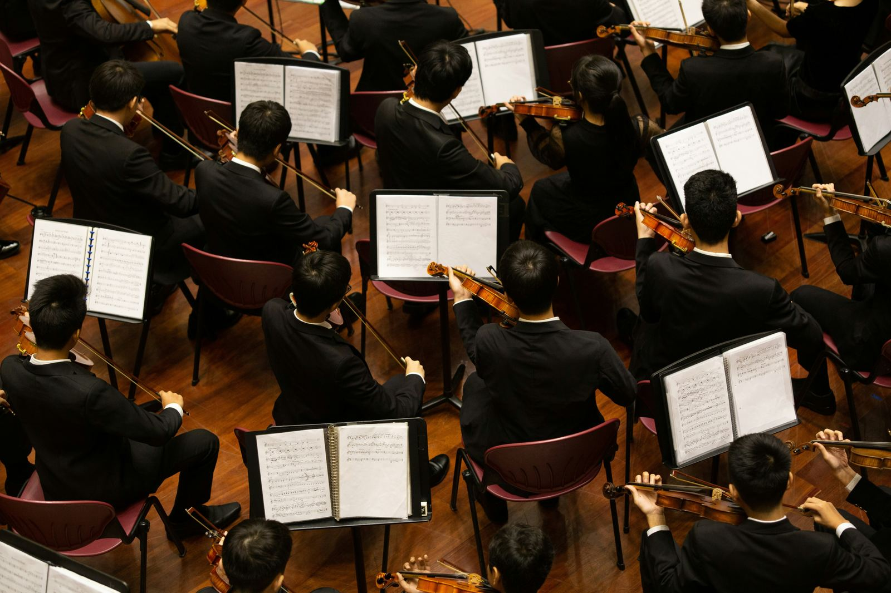

Experience the magic of the Italian Song Festival in Sanremo. Discover talented artists competing for the prestigious Leone di Sanremo.
Vivi la magia del Festival della Canzone Italiana a Sanremo. Scopri artisti di talento in competizione per il prestigioso Leone di Sanremo.
Il Festival di Sanremo, noto anche come Festival della canzone italiana, è un evento musicale annuale che si svolge a Sanremo dal lontano 1951. È un momento emozionante in cui molti celebri artisti italiani della musica leggera si esibiscono e competono per il prestigioso riconoscimento del Leone di Sanremo.
Questo festival è davvero un'istituzione nel panorama musicale italiano e internazionale. La sua trasmissione in diretta televisiva sulla Rai e in Eurovisione, insieme alla copertura radiofonica, lo rende un evento amato sia in Italia che all'estero.
Durante il Festival, le canzoni in gara sono tutte inedite e composte da autori italiani. Ci sono due sezioni principali: "Big" per artisti consolidati e "Nuove proposte" per emergenti. Le esibizioni sono giudicate da varie giurie, inclusa una votazione popolare tramite televoto, che determina i vincitori.
Un dettaglio interessante è che in passato, durante gli anni '80, alcune esibizioni sono avvenute in playback per vari motivi tecnici, ma questo è stato superato ed ora siamo tornati a prestazioni dal vivo coinvolgenti e autentiche.

Dal 1977, il Festival si svolge principalmente presso il Teatro Ariston di Sanremo. La data di svolgimento oscilla tra i primi giorni di febbraio e la prima decade di marzo.
Un altro aspetto affascinante è che il vincitore del Festival di Sanremo ha spesso la possibilità di rappresentare l'Italia all'Eurovision Song Contest, aggiungendo un ulteriore livello di emozione e interesse.
fonte: Festival di Sanremo
Parole chiave
| Festival | Un evento speciale che si svolge ogni anno (e.g., festa) |
| Canzone | Una composizione musicale con testi (e.g., una canzone pop) |
| Italiana | Qualcosa che proviene dall'Italia (e.g., la lingua italiana) |
| Luogo | Un posto specifico (e.g., una città, un teatro) |
| Anni | Periodo di tempo che indica da quando un evento è iniziato |
| Frequenza | Quanto spesso qualcosa accade (e.g., annualmente) |
| Fondato | Quando qualcosa è stato creato per la prima volta |
| Genere | Tipo o categoria di musica (e.g., pop, rock) |
| Organizzazione | Chi gestisce e organizza un evento |
| Modifica | Cambiare o correggere qualcosa |
| Navigazione | Muoversi o esplorare un sito web |
| Ricerca | Cercare informazioni o dati su qualcosa |
| Gara | Una competizione tra persone o gruppi (e.g., una gara musicale) |
| Compositori | Le persone che scrivono musica |
| Ospiti | Le persone invitate a partecipare a un evento |
| Personaggi | Persone famose o conosciute (e.g., musicisti famosi) |
| Riconoscimento | Un premio o un segno di apprezzamento |
| Prestigioso | Di grande importanza o rispetto (e.g., un premio prestigioso) |
| Musica leggera | Tipologia di musica facile da ascoltare e piacevole |
Esercizio
Domande
- Dove si tiene il Festival di Sanremo ogni anno?
- Qual è il premio più prestigioso consegnato al vincitore?
- Quali sono le due principali sezioni del Festival?
- Cosa significa "obbligatoriamente inediti"?
- Qual è il periodo tradizionale di svolgimento del Festival?